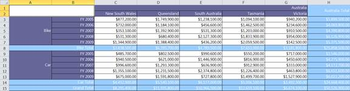

PivotGrid for WPF can be exported as an XLS file using Essential XlsIO. The user can export the contents of the PivotGrid to the Excel document for future archival, references and analysis purposes.
Call Export method
The GridExcelExportclass provides support for exporting data from a PivotGrid to an Excel spreadsheet for verification and/or computation. The following dlls should be added, along with the default dlls in the reference folder:
· Syncfusion.PivotGridConverter.Wpf
|
[C#]
//// Export to Excel. SaveFileDialog savedialog = newSaveFileDialog(); savedialog.AddExtension = true; savedialog.FileName = "Sample"; savedialog.DefaultExt = "xls"; savedialog.Filter = "Excel file (.xls)|*.xls";
if (savedialog.ShowDialog() == true) { fileName = savedialog.FileName; GridExcelExport excelExport = newGridExcelExport(this.pivotGrid1); excelExport.Export(fileName); } |
|
[VB]
' Export to Excel. Dim savedialog As SaveFileDialog = New SaveFileDialog() savedialog.AddExtension = True savedialog.FileName = "Sample" savedialog.DefaultExt = "xls" savedialog.Filter = "Excel file (.xls)|*.xls"
If savedialog.ShowDialog() = TrueThen fileName = savedialog.FileName Dim excelExport As GridExcelExport = New GridExcelExport(Me.pivotGrid1) excelExport.Export(fileName) End If |

Figure 24: Exported Excel document from PivotGrid